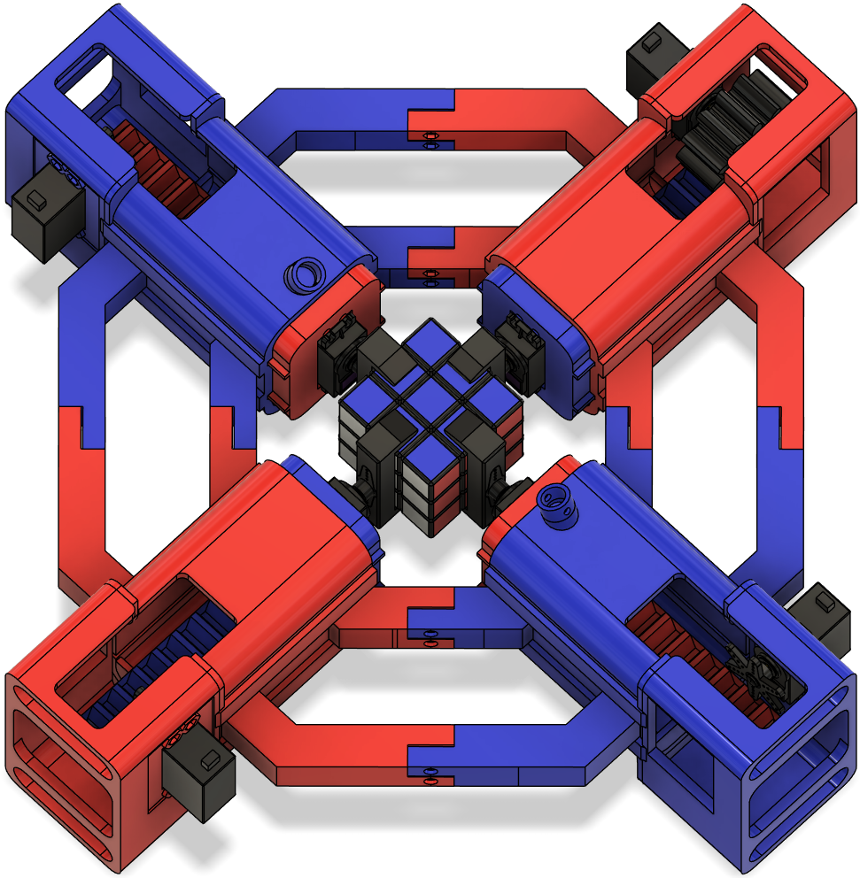
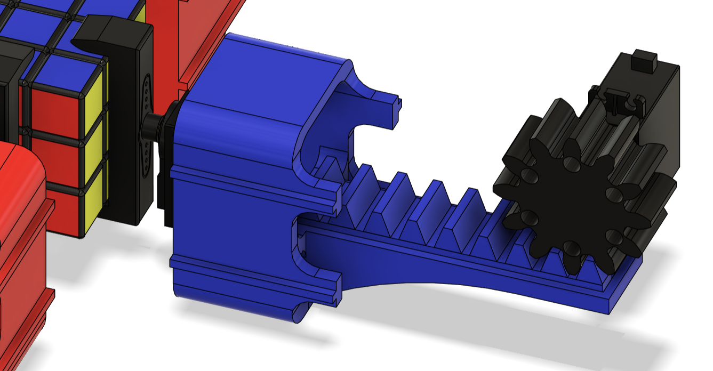
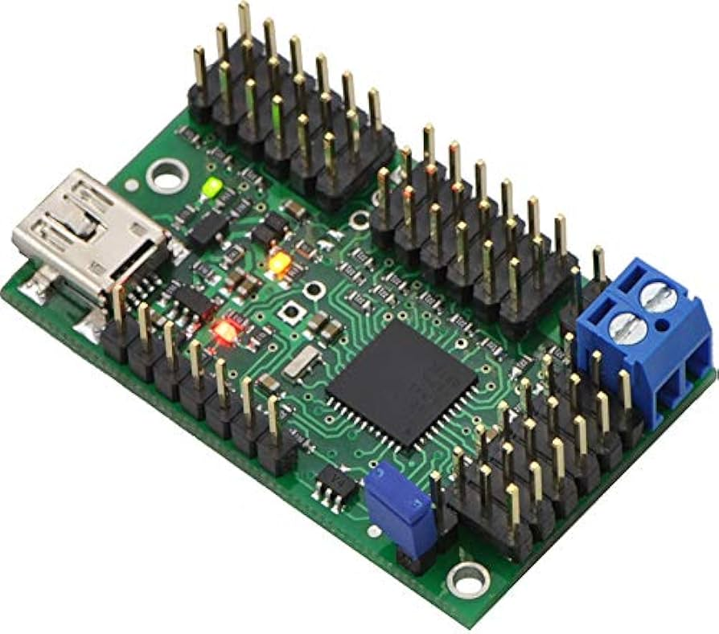

3x3x3 Rubik's Cube Solving Robot
A custom-built robot designed to autonomously solve a standard 3x3x3 Rubik's Cube.
This project involved the end-to-end design and development of a fully autonomous 3x3x3 Rubik's Cube solving robot. Every component—from the mechanical structure and electronics to the software and solving logic—was built entirely from scratch. The system integrates custom-designed servo-actuated arms to manipulate the cube, a vision pipeline to detect and interpret cube state via a camera, and a solving algorithm tailored to execute moves efficiently in the real world. Read below for a more in-depth breakdown of the mechanical, electrical, and software components that brought this project to life.

WARNING: The following codebase was developed while I was in highscool, before I knew proper coding practices. As such, it is terrible and I strongly advise not trying to understand it. This contains some earlier versions of the algorithm, as well as the robotic control/computer vision code.
Watch this video to see it in action:
Hardware
Mechanical
The physical structure of the robot was designed entirely in Fusion 360 and is entirely 3D printed, with the excpetion of some nuts and bolts. The system uses a rack-and-pinion mechanism driven by servo motors to actuate four claw-like arms, each capable of gripping and rotating one face of the Rubik's Cube, or moved in unison to rotate the entire cube. The mechanical design focuses on maximizing reliability, without requireing any modifications to the cube.

Electrical
Eight servo motors are used to control the movement of the claws, four responsible for moving each claw in/out, and 4 for the rotation of the claws themsleves. Each of the servos are controlled via a Pololu Mini Maestro servo controller, which interfaces directly with the computer over USB, allowing precise command of servo positions through custom control scripts. A USB camera, also connected to the computer, provides real-time visual input for the cube state detection, and it is all powered by an external power supply.
